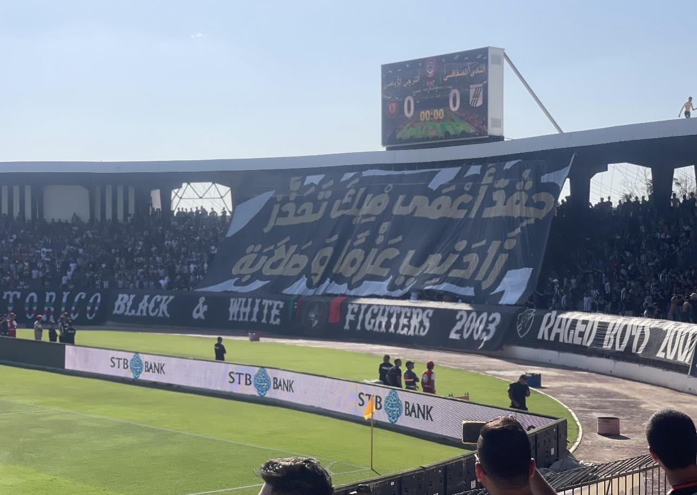
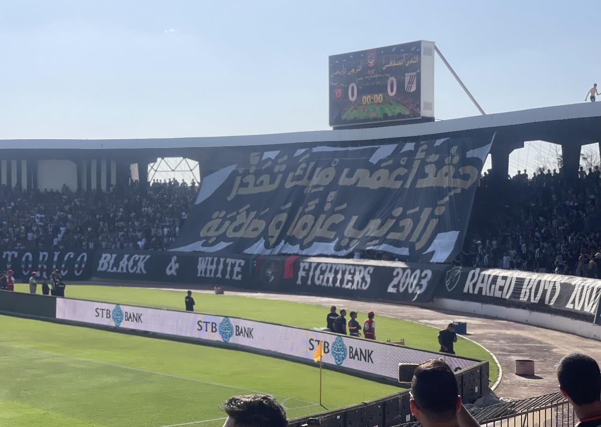

Passions
La cuisine
La cuisine est pour moi bien plus qu'une simple activité quotidienne ; c'est une véritable passion, une manière d'exprimer ma créativité et de partager des moments de bonheur avec les autres. Chaque plat que je prépare est une aventure, une découverte de nouvelles saveurs, de textures et d'ingrédients qui se marient pour créer des expériences uniques. C'est un art qui rassemble, qui réconforte et qui éveille des souvenirs, et chaque repas est pour moi une occasion de transmettre un peu de ma joie et de ma passion.


La Dance
Depuis mon enfance, la danse pour moi est un moyen d'expression libre, où chaque geste, chaque rythme me permet de raconter une histoire sans mots. Lorsque je danse, je me sens en totale harmonie avec mon corps et l'énergie qui m'entoure.


Stade Et Mouvement
Aussi, je suis passionnée d'aller au stade pour regarder les matches de football et supporter mon club préféré.


 

Le théâtre
J'aime aussi le théâtre et je le considère comme un moyen de me transformer, d'explorer de nouveaux univers et de vivre mille vies à travers chaque personnage que j'incarne.